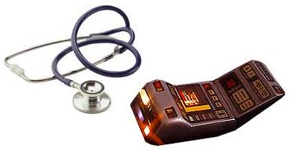

The JAAKSONS
(Jay and Acacia Kooky Spin-Off Nerd Society)
At the Sign of the Multiple Exclamation Points

or, Nenya’s Adventures in the Department of Fictional Psychology
An Eyewitness Account
Disclaimer: The Protectors of the Plot Continuum belong to Jay and
Acacia, who have kindly allowed us to play in their grey corridors. Glorfindal and all things OFUM belong to Miss Camilla Sandman, and Maeluiwen belongs to Jen Littlebottom. Lord
of the Rings belongs to the Tolkien Estate, X-Files to Chris Carter and
Ten Thirteen Inc., Star Trek to Gene Roddenberry and Paramount, X-Men to
Marvel Comics and Twentieth Century Fox, Harry Potter to J. K. Rowling,
Men in Black to Columbia/Tristar Studios, the song "David Duchovny" to Bree Sharp, Winnie the Pooh to A. A. Milne, Green Eggs and Ham to Dr. Seuss, DiscWorld to the illustrious
Terry Pratchett, and The Hitchhiker’s Guide to the Galaxy to the late
Douglas Adams. (deep breath)
There is, for once, no fanfic story
dissected in this tale. (“21 Uses for Tribbles” by majorkami and
“Gofi and the Balrog” by Levade [excellent story! read it now!] are real, but the stories our
fictional characters are in treatment for are generalized from a variety
of sources.)
Summary: Agent Nenya finds herself in the Department of Fictional
Psychology after having a breakdown in the last chapter. Guest-starring
Agents Nathonea Dewstan and Constance Sims.

Chapter 3: At the Sign of the Multiple Exclamation Points
“What sort of person sits down and writes a maniacal laugh? And
all those exclamation marks, you notice? Five? A sure sign of someone who
wears his underpants on his head.”
–Terry Pratchett, Maskerade
It was dark when Nenya awoke. Whether it was stormy, and whether it was
night, was a matter for conjecture. Nenya’s training and experience as an
assassin for the Canon Protection Initiative’s Department of Multiple
Offenses had thoroughly accustomed her to awakening in strange
circumstances. She was well-used to awakening in the dark, in an unknown
location, sprawled flat on her back. She was even used to awakening in
places with weird smells and odd, unidentified humming noises in the
background. None of this bothered her. What she wasn’t used to was
awakening in an actual bed. With sheets. And a pillow and blanket, both
of which seemed to have been washed within the last decade–possibly with
scented soap. That made her nervous.
Nenya opened her eyes and stared at the (probably grey) ceiling overhead,
ears straining for any sound of hostile motion. All she could detect was
a low beep from some kind of machine, and the light whoosh of
several people or animals breathing. She sat up warily, peering into the
darkness, hoping to figure out where she was before being attacked by a
warrior princess, a psychokinetic Cute Animal Friend, or a large
plot-bunny. There were...unusual...hazards to this job, to be sure.
After some study, she decided that she and the bed seemed to be sharing a
large, deeply shadowed room with three other beds, two of which were
occupied. A set of thick drapes was drawn at the end of the room, faint
light seeping from around its edges. Windows, perhaps. Several strangely
shaped machines stood about the room, blinking little lights and emitting
the hums and whirrs she’d heard earlier. A sliver of soft yellow light to
her left indicated a door, slightly open, leading to some kind of
hallway.
A groan from the darkness make her turn her head. The long, dark shape in
the next bed was tossing about in its sheets, moaning something in a
distinctive male monotone.
“No.... don’t.... no, Sk...Sklu...Shkully....” said the voice. Nenya
watched, intrigued, as his body executed an impressive set of full-length
twitches and spasms. “Come back...! Shkully.... Scully....
extraterrestrial.... Scully!”
Whoa. Scully? Nenya thought. That must mean–what on
earth was she doing in the same room with Fox Mulder? Who else could
enunciate “extraterrestrial” so clearly in their sleep?
Wincing slightly at a sudden pain in her head, Nenya swung her legs
over the side of the bed. Time to do some investigating.
The night nurse looked up from her game of computer Solitaire and jumped
slightly. A wild-eyed apparition loomed over the edge of the nursing
station counter, dark gaze glittering dangerously. Frizzy red hair stuck
out from all over its head, thick glasses perched on its nose, and
wrinkled blue hospital pajamas covered its twitching shoulders. It glared
at her.
“Where in Ëa am I?” it rasped.
“That depends on who you are,“ replied the nurse calmly, quite
used to dealing with strange apparitions appearing in the middle of the
night. Or early in the morning. 5:45 am. The morning shift should be
coming on soon.
The creature shook its head. “Don’t try that on me. I may not know where
this is, but I’m pretty sure it’s not the DiscWorld afterlife. For one
thing, there’s an FBI agent in my room, and for another,” it glanced
around the hallway, “I don’t think my personal afterlife will be
this...grey.”
The nurse smiled. “What I meant is that my description of where you are
will depend on what sort of person you are, and the last thing you
remember before waking up.”
“Oh. Well, I was on a mission, and Aragorn was....” It stopped, shaking
its head as if confused or in pain. “...he was behaving very strangely,
and then I got hit by a rabid Klingon on a motorcycle, or possibly an
especially heavy dangling participle, and–”
“Wait a minute. A mission? You’re that agent, aren’t you? Anya, Enya,
something....” The nurse clicked a few buttons on her computer. “Nenya,
that’s what it was. A couple of those crazy Sue Department agents wheeled
you in here in the middle of the night, going on about how the whole
Medical ward was full of casualties from the latest plagiarism offensive
in the Fanfic Wars, and couldn’t we bend the rules enough to put an agent
in FicPsych for one night, and they were sure you’d be
discreet and not interfere with any of the fictional patients, and–“ She
stopped for breath, shaking her head at the thought of last night’s
crazed visitors. “At any rate, if you want to know where you are, you
might as well just read the sign up there.” She waved a hand vaguely at a
spot on the wall behind and above her head.
Nenya squinted. On the grey-painted wall was a (slightly lighter grey)
plaque with (darker grey) lettering on it. Most of the space on the
plaque was taken up by a row of large exclamation points. Above them, in
tiny letters, were the words “Canon Protection Initiative” and below
them–
“Department of Fictional Psychology,” she read out slowly. “I should have
known. Even when I get hurt I don’t get out of Headquarters.” She
sighed heavily. “You work here, eh?”
The nurse smirked a little and held out her hand to shake Nenya’s.
“Apparently so. Nathonea Dewstan, at your service.” She tilted her head
to one side. “You know, you field agents are as weird as I’ve
always heard.”
Nenya laughed. “Nenya Gabriel at yours. I’d claim the insanity was a
result of the job conditions, but that’d be misleading you, and we’re
sworn to uphold the truth here in this dungeon, are we not?” She shook
the proffered hand, being careful not to use bad grammar, which would
have resulted in her shaking her new acquaintance by the hand, a rather
more vigorous exercise than she was prepared to engage in at the moment.
“You know,” she said after a moment, “I take it back. I think my personal
afterlife will be grey. After a few more years spent in this
place, that’s the only colour my eyes will be capable of
registering.”
Nathonea gave an answering smile that promised evil to whoever the
architects and interior designers of this place were, if she ever caught
them. “Tell me about it. At least you get some fresh air
sometimes. Must be nice.”
“Nice? When you’re being chased by the warrior daughter of Galadriel and
Sam Gamgee? Or running at full-tilt up Caradhras to catch her so you can
Do The Duty? In full Uruk-hai armour? Without losing the charge
list?”
Nathonea leaned back in her chair and folded her arms behind her head.
“Guess the grass is, er, less grey on the other side of the fence, huh?
Here I am thinking what a pain it is to be stuck in here, especially when
we’re as busy as we’ve been lately. I think all the sequel movies that
are coming out this year have something to do with it, but in any case
we’ve been run off our feet trying to keep up with all the mentally
abused characters lately. The MIB neuralizers just don’t seem to be doing
it these days, and three of our nurses’ aides just got transferred to
Intelligence, and–“
Suddenly the nurse sat bolt upright in her chair. “Saaaay, you’re off
duty right now, aren’t you?
Nenya quirked an eyebrow, subconsciously imitating Fox Mulder’s partner’s
Inquisitive Stare #15. It wasn’t quite Elvish Glare #27 (it was nearer,
in fact, to Vulcan That’s-Fascinating #14 [1]), but it was close. “I
suppose I am. If they’ve gotten around to filling out the paperwork,
which I doubt.”
“How’d you like to try some of that greener grass? We could use a hand
around here for a few days till you have to go back to your Response
Centre. I bet Head Nurse Suzine and Doctor Freedenberg could be convinced
not to remind Personnel of your whereabouts for a while, in exchange for
your help. Don’t know if we could pay you, but I bet you could
brow-beat–er, frond-beat–the SO into giving you a raise for the
‘initiative’ you showed, next time you have to go see him. How about it?
You wouldn’t really have to do anything medical, just general helping-out
kind of stuff.”
Nenya considered for all of seventeen seconds. “All right,” she said, “on
two conditions. First, I get one of those cool uniforms like you’re
wearing, with the exclamation point on the shoulder.”
“No problem. And the other condition?” Nathonea’s eyes glinted greedily
at the prospect of a new recruit.
“You tell me what Fox Mulder was doing in my room.”
Nenya, freshly showered and uniformed, followed Nurse Constance Sims’
clipboard down the hallway, munching on the large apple fritter she’d
been given for her breakfast. Like most Headquarters food, its age was
indeterminate, but at least it was sugar. Nurse Nathonea, who had
outfitted her and given her a quick tour before turning her over to the
day staff, had mysteriously not been notified of the ban on sugar for
field agents. Nenya was not about to enlighten her.
She sighed contentedly. Though this was only the second donut she’d had
in three months, it was the fifth she’d had today. (Don’t ask how that’s
possible. It’s related to the sock-dryer phenomenon, which nobody has
been able to explain yet, either. Possibly the Universal Laws of
Narrative Comedy had decided to have mercy on Nenya since she had managed
not to lose a single sock through her entire four years at OFUM, and were
choosing this way to reward her. Probably not, though.) She grinned as
the sugar hit her bloodstream, and began to sing (in a sadly off-key
voice).
“Any Sue you can shoot, I can shoot faster,” she warbled. “I can shoot
anything faster than you. Yes I can, yes I can, yes I can!” Life was
good, and if she was irritating her amazingly placid new guide, so much
the better.
Suddenly her song was drowned out as a loud, wild, tortured wail shrieked
through the corridors. Nenya yelped, jumped several feet in the air, and
crouched, back to the wall, fumbling instinctively for weapons that were
no longer on her person.
“What,” she panted, “was that?”
Nurse Sims turned around calmly, noting something on her clipboard.
“Seven of Nine,” she replied, not a hair out of place.
“WHAT?!”
“Hmm? Oh.” The Spock-faced nurse looked up and cracked a small smile.
“Technically, that was Nazgul Number Seven. But we figured that it would
be less traumatizing for the folks who have to give him therapy if we
nicknamed him after a hot Borg sex-symbol.”
Nenya straightened, calming her racing heart and taking deep breaths.
“I’d say he’s pretty well recovered, what with a shriek like that. Trust
me, I should know.” She shuddered.
Nurse Sims nodded. “You’re right. It is a good sign that he’s on his way
to full recovery, if he can scare a hardened field agent as badly as he
scared you.” Noticing Nenya’s slightly ashamed look, she added,
“Actually, it’s a good sign for you, too. If you hadn’t reacted in
terror to a Nazgul shriek, we’d know there was something seriously wrong
with you.”
Nenya grinned at that, and started searching the hallway for the last
half of her donut, which had gone flying in the excitement. After a short
search she found it being chewed on by a large potted fern in the corner.
She sighed. No sense fighting over food with what was probably a relative
of the Director of Fictional Psychology.
“So what are we doing again?” she asked, for the eighth time since she’d
started following Nurse Sims down this corridor. “Something about
angst?”
Nurse Sims sighed. If Nenya hadn’t already decided that her companion was
at least part Vulcan, she would have interpreted the sigh as aggravation.
“Yes. We are going to the room you were in last night, to check on the
progress of the others there, and then we will proceed to the rest of the
rooms in that section. Incidentally, while we are there, you may retrieve
any of your belongings that came in with you, and bring them back to the
nursing station after our rounds.”
“And what about angst? You said something about angst earlier, I know you
did. And you weren’t just talking about the headache I’m giving you,
either.”
“All of the patients in this wing have been diagnosed with an overdose of
angst. Fox Mulder, whom you encountered upon awakening, has just come
from a sequence of fics in which he was quite angstily slashed with
several of his male colleagues, and in the last one he was traumatically
separated from his partner, Dana Scully, by means of a tragic car
accident. Thus, he’s also suffering from Scully Withdrawal Syndrome, a
specialized type of Partner Separation Anxiety. The other patient in your
room is Rogue, birth name Marie D'Ancanto, of the X-Men continuum, who
has also been heavily involved in angsty romantic relationships
recently.”
Nurse Sims turned a corner, and Nenya followed after her, trailing her
fingers along the flame-thrower marks on the walls. “Down the hall from
them, there’s Draco Malfoy from the Harry Potter universe. Along with
angst, Malfoy has Delusions of Love for Harry Potter and is running a
rather high fever. The other patient in that room is Wesley Crusher from
the starship Enterprise, who, due to cross-continuum
contamination, now believes that everyone hates him.”
“But don’t they?” Nenya was puzzled.
“Don’t who what?”
“Don’t most Star Trek fans hate Wesley Crusher, for being a Marty
Sam?”
Nurse Sims sighed. “Well, yes, a lot of them do, which is why we don’t
let our more...enthusiastic...TNG Trekkie agents near him when he’s here
if we can help it. He’s flunked most of the Mary Sue Litmus Tests we’ve
run on him, so they do have a point. But he is a canon character,
so we’re sworn to protect him no matter how much it grates on our
sensibilities.”
“What happened this time?”
“The usual–Picard or Riker or someone going on about how much they
couldn’t stand him. However, I think they said it to his face, instead of
behind his back as they usually do. In any case, he became quite
depressed and was just about to leap out the nearest airlock when a PPC
agent found him.”
“No rabid tribbles?”
Nurse Sims flashed a full smile for the first time all morning. “Not this
time. You heard about that one, did you? It was called ‘21 Uses for
Tribbles’, I believe. It came in through the Parody Department.”
“Yeah, one of the uses for tribbles was ‘substitute ensign’–filling out
Wesley’s uniform and reporting to the bridge for duty. After having
killed him in a rather bloody fashion, of course. Later they fired the
tribbles at an enemy ship, and ended up using the ones who were
pretending to be Wesley, too.” She shook her head sadly. “Poor
tribbles.”
The nurse regarded her curiously. “Don’t you work the Lord of the Rings
continuum?”
Nenya nodded. “I do. But Star Trek is a recent hobby of mine. I don’t
know enough about it to work it–and, besides, LOTR is so much busier
right now that I don’t think they’d transfer me even if I did know the
Trek canon. But it’s a good break from Arda sometimes. It’s the future,
Middle-earth is the past, so between the two I’m pretty happy.”
“And it also explains why the author has been dropping references to
Vulcans and Klingons in this chapter, doesn’t it?”
“Er, yes.”
“I thought so. Well, we’re here.” Nurse Sims pushed at a grey door,
identical to the last dozen or so they’d passed. “Let’s go see how Mr.
Mulder is faring this morning.”
Mulder was sitting on his bed, his back to the door and his head in his
hands, when the agents pushed open the door. He wasn’t twitching
noticeably, thank goodness, but his shoulders were slumped dejectedly.
The agents looked at each other and Nurse Sims shrugged. Nenya tapped him
on the shoulder. He jumped.
“Where am I?” he asked, causing Nenya to go weak at the knees. She
valiantly attempted not to drool.
“Uhm, nowhere you need to, uhm, know about right now,” she stammered,
captured (like Bree Sharp) by the alien light of the spaceship of love.
“You won’t remember it when you wake up back home, anyway.”
Mulder’s eyebrows shot up and Nurse Sims glared at Nenya. Too late, Nenya
realized that evasiveness was precisely the wrong tack to take with
someone known for his tenacious investigative tendencies. Damn.
“Having nightmares again, Mr. Mulder?” Nurse Sims said, by way of
changing the topic. She continued to glare at Nenya, who looked at her
shoes.
Mulder nodded.
“Was it Scully again?”
Mulder looked surprised that she knew his partner’s name, but nodded.
“She’s in a car crash, and I can’t save her. Because I wasn’t there.
Because...” He trailed off, his eyes going glassy. “Because I was across
town spending the night with...Deputy Director Skinner? Or was it Alex
Krycek?” Mulder’s forehead crinkled with the effort of remembering. “And
she’s in the ICU but they won’t let me in to see her. And it’s all my
fault!” A single, over-dramatic tear ran down his cheek. “And the whole
time, I hear this voice, chanting in the background.”
Catching Nenya’s eye, Nurse Sims mouthed, “Latest fanfic.” To Mulder, she
said, “What was the voice chanting?”
“I think–I think it was saying ‘Legolas, Legolas, Legolas,’ over and over
and over and over and ov–”
“There, there, it’s OK, Mr. Mulder. Just have a sip of this and lie down
again. It’s going to be all right,” Nurse Sims said quickly, producing a
vial of something orange from her pocket and patting Mulder gently on the
shoulder. He’d started twitching again at the mention of the
L-word.
As she tucked Mulder back under the covers, Nurse Sims said, “Nenya, will
you check the soundproofing system for me? The insulation must have
fallen out if he’s hearing about Legolas in his sleep.”
Nenya nodded and headed towards a tall black-chromed machine in the
corner. The Four-S, or Subconscious Suvian-Soundproofing System, was one
of Makes-Things’s devices–and one so useful that it was installed in
every room in Headquarters. Because the PPC was so closely tied in to the
fanfiction Word Worlds, the place positively thrummed with the psychic
mental projections of all the obsessed fan-authors. Usually this took the
form of a subconsciously-projected repetition of the most-drooled-over
lust object of the moment. The Four-S was designed to muffle this grating
noise. At the moment, of course, the name being chanted was “Legolas”,
though a few years back, before Nenya’s time, it had been “Leo!” (Which
may explain the tendency of many older PPC agents to turn homicidal at the
mention of boats, icebergs, blue jewels, or the year 1912.)
The Four-S in this room had obviously broken down a lot lately. The cover
to the insulation compartment had been removed and kicked halfway across
the room. There was a large bucket of cotton batting sitting beside the
machine (Do Not Remove Bucket On Pain of Pain! it said), and vitriolic
graffiti had been scrawled on the wall behind it. Nenya quickly grabbed a
handful of cotton batting from the bucket, pulled the old, singed
insulation from the innards of the machine, and stuffed the new batting
in. The machine sparked a bit and growled at her, but the low-grade
headache she’d had ever since entering the room disappeared. Mulder
sighed happily as he drifted off into his orange-medicine-induced
sleep.
Nenya pulled herself to her feet, bumped her head on the edge of the
machine, fell to the floor, swore at the bloody Universal Laws of
Narrative Comedy, and was loudly shushed by Nurse Sims. The latter was
checking over Rogue, who, amazingly enough, had slept through the entire
interview with Agent Mulder.
Nurse Sims slipped a pair of earphones on Rogue’s ears. Nenya could hear
a tinny voice coming out of the small speakers–I am not a psycho, I am
not a psycho, I am not a psycho....
“She is still asleep,” Nurse Sims said, taking a Jay’s Obvious
Statement of the Day award. “She does not seem to be in any pain,
so if you will get your belongings, we can proceed to see our next
patients.”
“My stuff, right.” Nenya staggered over to her bed and retrieved her
water bottle, eyeglasses case, slippers, and a large stack of magazines
which had not been there when she had left. The scrawled note on top of
the stack said they were from Glorfindal, and the crispy edges confirmed
this. She shook her head fondly at the thought of her mini. What a
sweetie, even if his carrying methods meant half the magazines would be
unreadable due to scorch marks. She snapped her fingers to call up a
plothole and tucked her stuff into the bookbag it spit out, earning an
arched eyebrow from Nurse Sims.
Swinging her bag over her shoulder, she moved over to Mulder’s bed,
whispered something in his ear, and then followed the nurse out of the
room.
Several yards down the hall, Nurse Sims stopped walking and turned to
her. “What did you say to him?” she queried.
“Mulder? Oh, nothing,” Nenya said innocently. “OK, OK, stop looking at me
like that. All I said was, ‘This isn’t a conspiracy’.”
Nurse Sims looked at her oddly but continued walking. Three steps later
she stopped again. “Why are you walking like that?”
“I’m proceeding. You said we were going to proceed to see our next
patients, so–“
Nurse Sims muttered something under her breath that sounded an awful lot
like, “Why me?”
“Well, that was interesting,” remarked Nurse Sims, rather too casually,
an hour or so later.
“I’ll say,” said Nenya, trying to keep up with Nurse Sims’s brisk stride.
“It’s not every day I get screamed at and called a ‘bloody red-haired
American exchange student AARGHH!!!’”
“Not to mention being turned to stone for several seconds. Which looked
quite uncomfortable, by the way.”
“It was.”
“We’re lucky Mr. Crusher had managed to rig up a security forcefield in
front of the door using his mattress springs and one of the lightbulbs.
Otherwise Draco might have done some real damage.”
“You don’t call being paralysed and having your entire ethnic group
slandered ‘real damage’?”
“Ethnic group?” Nurse Sims’s eyebrow was doing it again.
“Redheads.”
“That is not an ethnic group.”
“So? It’s a, whachacallit, visible minority. Eighty percent of all Sues
have red hair, especially in Middle-earth. It’s slander to the species!
Not all redheads are imbeciles with improbable heritage and tragic pasts
who just want to get into Legolas’s pants! It’s slander, I tell you!
Slander!”
“As opposed to being of supposedly sound mind and willingly enlisting in
an agency which exists only in a few deranged writers’ heads and which
assassinates characters which exist only in other deranged writers’
heads?”
“Exactly!” Nenya had worked herself into enough of a rage to be
impervious to Nurse Sims’s sarcasm. She blew out a breath. “I just wish
they’d–“
Excuse me? said a voice at knee-level. Nenya plowed to a stop.
Pardon me. Down here.
“Who said–oh, it’s you. How was the donut?”
It was the fern who’d eaten Nenya’s apple fritter earlier.
Very delicious, thank you. But I have a message for an Agent Nenya
Gabriel. Am I correct in assuming that you are she?
“Yup. C’est moi.” Nenya placed her hand dramatically over her
heart.
The fern handed her a sheet of paper. You are not Miss Piggy, Miss
Gabriel. And your accent is horrible. You are to report to Section 31,
Room B9, for a...debriefing regarding your latest mission. Immediately, I
might add.
“What’s an ‘ellipsis debriefing’?”
I suggest you run along and find out.
Nenya shrugged. Talking plants were, as a rule, not very helpful when
you wanted information.
“Have fun with the rest of your patients, Nurse Sims. Don’t get killed.”
“I will do my best, I assure you.”
“If you do find any tribbles, let me know. I think they’d get along well
with Glorfindal.”
“Certainly. But you had better get along to your...debriefing. They don’t
like to be kept waiting.”
Nenya shrugged again, and headed off to find Room B9. With a name like
that, it’d probably be anything but benign. Ah, well, anything was better
than being screeched at by an upset wizard-in-training who was probably
getting all kinds of ideas on the meaning of “sufficiently advanced
technology” from his precocious roommate.
Or so she thought until she reached Room B9 and saw the sign on the door.
Multimedia Anti-Salivation Department, it said. Uh-oh. No-Drool Videos!
And she’d definitely been appreciating the scenery on her last
mission....
A pair of surprisingly strong fronds reached out and grabbed her before
she could get away.
The whimpers started three point five minutes later, and went on for
quite some time.
“And lift, and stretch, and lift, and stretch....” Nurse
Nathonea, standing in the middle of the floor in the nurses’ common room,
hefted two thick copies of the Official PPC Handbook over her head in
time to the music. “I, comma, square bracket, and stretch,
recruit’s name, square bracket, and comma and stretch, do
solemnly–”
The exercise music was suddenly interrupted by the sound of someone
lurking unobtrusively in the doorway. Nathonea turned, grateful for an
excuse to stop her Stoutness Exercises for a minute. “Look, can’t you at
least lurk obtrusively or something? All this unobtrusive lurking is
really quite–oh, it’s you.”
Nenya, a piece of paper in her hand and a large rubber band around her
head, stared glassily back at her from the threshold. Her face was tinged
an interesting shade of green. She didn't answer the greeting.
“What’s wrong with you?” Nathonea set down her
Handbooks-cum-barbells. “Lunch wasn’t that bad. And I know the
Kit-Kats in the vending machine aren’t all that fresh, but I daresay
you’ve seen worse on some of your missions.”
Nenya held the piece of paper out towards her new friend. “Nndrr
vdsz,” she said through the band holding her jaw shut.
“Take the rubber band off your head so I can understand
you.”
Nenya complied. “No-Drool Videos,” she said.
“Oh. Talking sunflower on a crutch! What did you do to earn those?”
“Apparently drool leaves a distinct chemical residue on uniform
sleeves.”
“What?”
“Just read it.” She pushed the piece of paper into Nathonea’s hand.
“‘First infraction:’” read Nathonea, “‘March 14, 2003 AD, Canon
Protection Initiative Headquarters. One count of kissing picture of actor
portraying Aragorn son of Arathorn.
“‘Second infraction: Stardate 60741.5, Federation Starbase Deep Space
Nine. One count of near-Mary Sue glurge-writing, subject Julian S.
Bashir, MD.
“‘Third infraction: September 22, First year of the Fourth Age of
Middle-earth, Imladris, Eriador. One count of drooling, subject Elladan
son of Elrond Peredhil.’
“Oh, my. You really should know better. What did they make you
watch?”
“Maeluiwen. The Librarian of U. U.”
“What? Together?”
Nenya turned a shade greener. “Thank you for that mental image.
No. Separate videos. But she had all the mithril lingerie bits on, or
off, as the case may be. And they cut out all the bits with the
hot male elves shirtless. And the Librarian–” Here she turned an
intriguing shade of puce and covered her mouth with her hand.
Nathonea wordlessly handed her a trash can.
“Thanks,” said Nenya, a few minutes later. “Have you got any sporks
handy? Or one of those MIB flashy-thingys?”
Nathonea rummaged through a cabinet. “Got something better. Here.” She
held up a large white bottle. “Bleeprin.”
“Never heard of it. What’s it do?”
“Combination of bleach and aspirin. Very effective in eliminating bad
mental images. Made by Meir Brin from HFA and Miss Laurel from
OFUM.”
Nenya looked at the bottle as if it were a container of Mary Sue glitter.
“Miz Laurel? Have you actually tried this stuff, or are you using me as a
guinea pig?”
Nathonea smirked. “Run into Miz Laurel before, have you? No, I’ve tried
it. It works quite well, though personally I prefer the liquid version,
Bleepto-Dismal. But we’re all out of that.”
Nenya still looked skeptical, but poured out two small white tablets into
her hand. She dug around in the backpack she still carried over her
shoulder, retrieved her water bottle, and swallowed the pills.
She blinked.
“Bloody hellfire.”
Nathonea just grinned, and swiped the bottle back before it could
disappear into Nenya’s backpack.
“Now, now, don’t try to steal these. You can get your own from Leto up at
the cafeteria. Good, though, aren’t they?”
“Does Upstairs know about this stuff?”
Nathonea shrugged. “Probably. They know most everything. But they haven’t
outlawed them yet. Probably figure that un-mentally-scarred agents work
better or something.”
“Or that if we have a means of healing the mental scarring, they can send
us into danger more often ‘cause we’ll survive the aftereffects.”
“Probably.” Nathonea rolled her eyes at the Flowers That Be.
“Bleeding pragmatists.” The happy grin still hadn’t faded off
Nenya’s face. “Wow. Bloody wow. I have got to tell Rosie about
these.”
“Make her buy her own.” Nathonea placed the bottle back in the cupboard,
let Nenya have just a glimpse of all the wonders therein, shut the
cupboard door and locked several large padlocks. "Incidentally, why
were you wearing an elastic band around your head?"
“Splitting headache. Had one. Don't now, though.” Nenya flicked
said elastic band at Nathonea, who ducked. The elastic band zinged off a
piece of valuable equipment and landed on one of the ever-present
computer consoles, hanging off the monitor like a stretchy bit of
Christmas tinsel.
“Ouch.”
“Look, it didn't hit you. And, Nathonea...what's ‘Pink Stuff'?”
Nenya had seen rather a lot of the contents of the cupboard before it had
been locked.
“You don’t want to know.” She made a face.
“Yes, I do. Does it go with Purple Stuff?”
“Well...”
“And what’s Ye Olde Poisonous Poison? Can I have some?”
Nathonea looked at her watch in a suspiciously inconspicuous manner.
“Don’t you have an appointment with Dr. Freedenberg to be heading off
to?”
Nenya glared at her. “As a matter of fact, I do. How did you...”
“I'm a FicPsych employee. I have my ways.” The nurse made a
face that was obviously supposed to be mysterious. “Now shoo. I have
another patient due in five minutes.”
“If you insist.” Nenya shrugged once more, retrieved the
elastic band, and headed out the door.
Whump.
That is, she was planning to head out the door. Her progress
was unexpectedly impeded by something large, black, chest-shaped, and
embroidered with a white tree. She followed the chest up to the head and
was confronted with Lord Faramir, Steward of Gondor, Lord of Ithilien,
and all-round impressive royal Numenorean.
“Er...um...that is...uh...Hi, Lord Faramir,” she stammered,
giving a little wave. She felt like a midget; the man towered over her by
a good fifteen inches. She heard Nathonea hyperventilating behind her.
Ah. A fellow Faramir fan.
“Forgive me for intruding, but could either of you direct me to the
offices of Doctor Freedenberg?” said Faramir. “I am a Ranger,
but the corridors are very confusing.”
“Glurgh!” said Nathonea, and promptly fell over
backwards.
Nenya rubbed her nose—ouch, Faramir's chest was rather solid—and backed
up a few steps. “Don't mind her,” she said, waving at the
prostrate form behind her. “Too much Bleeprin, not enough ellipsis
debriefings.”
“Pardon?” said Lord Faramir.
“Never mind. Did you say you were looking for Dr.
Freedenberg?”
“Yes. Do you know where I might find him? I have been summoned to
speak with him, and, to my shame, seem to have become quite
lost.”
“You're a Ranger. How could you get lost?”
“I am accustomed to tracking things in the wild, not to finding my
way about infinite corridors all of a single disturbing hue.”
The proverbial incandescent lamp went on in Nenya's brain. “Wait a
minute. Were you watching where you were going?”
“Yes, of course. Quite carefully.”
“That would be your problem, then. Here, take this.” She dug
about in her pack and produced one of Glorfindal's ancient dog-eared and
singed magazines.
Faramir turned it over several times in his hands. “This is in a
strange tongue, or at least a strange script.”
“Never mind that, just look at the pretty pictures. Try not to
wonder where Catherine Zeta-Jones got all the money for that wedding
dress, or what on earth she sees in Michael Douglas anyway. As for me, my
salivary glands may not be working after that marathon video session, but
walking next to a Numenorean should be quite distracting enough to get me
from here to there.”
“I do not understand.”
“You don't have to. Just look at the pictures, follow me, and we'll
be at Dr. Freedenberg's before you can say
Cormacolindor.”
Possibly because he recognized the voice of experience when he heard it,
or possibly because he was just coming from a story in which he was the
poor submissive younger child, Faramir followed her without another
word.
Yellow. Dr. Freedenberg’s office was yellow. Cheerful, sunny-side-up-eggs
yellow, and the change from the grey corridors outside was quite a shock
to the eyes. Nenya had a sudden urge to introduce the interior decorators
to green eggs and ham. Didn’t they know green was supposed to be
more soothing?
She sat gingerly in a rickety plastic chair across from the good doctor,
answering questions and listening vaguely to his diagnosis and treatment
plan. Basically, it seemed that Upstairs thought she’d cracked because
she was lusting too much after Aragorn and assorted Elves; thus the
No-Drool Videos. If she wasn’t developing any new tics, wasn’t howling at
the moon (not that one ever saw the moon from inside Headquarters, which
Nenya pointed out to Dr. Freedenberg), and wasn’t stealing hand-grenades
from the supply office, they saw no reason why she should not go back to
work yesterday.
Dr. Freedenberg, on the other hand, thought that complete incoherent
gibbering from a person normally capable of filling out intelligible
reports meant something. He thought she should take a few days off, go
talk to a few people who weren’t either fictional or insane (Nenya
pointed out that she didn’t know any), and maybe find out where the
swimming pool was in Headquarters. Nenya said she didn’t know there
was a swimming pool in Headquarters [3], and that she thought Dr.
Freedenberg looked like Alec Guinness.
At the moment he was delineating the amount of Bleeprin he felt was
healthy for the human body to ingest per day, and Nenya was mentally
multiplying his figures by at least three and a half. She made a mental
note to go by the cafeteria as soon as possible after she was done here,
and stock up on a month’s supply of the stuff. Which, given the way
things had been going lately, would last about three days.
“Well, that should be all, then,” said Dr. Freedenberg, bringing Nenya
out of her reverie. “There’s just one more thing I’d like to have you do
for your treatment. I have a video here–“
“AAAARRGHHHH!!!” said Nenya, leaping up from her seat and running out of
the room. “I would like to eat your foot! Hello, thinks Mr. Purple Cat!
AAAAAARGHHHH!!!111!!”
She didn’t stop running when she passed the doctor’s outer office (where
Faramir sat, absorbed in People); in fact, she didn’t stop running
when she reached the nursing station (where Nathonea was still out cold).
She didn’t stop running till she reached her own response centre, where
she dived into the bean-bag chair and under several large blankets. She
whimpered.
After a moment, she stuck her head out, grabbed her Lorien cloak from its
hook, and pulled it over her head.
“Odd,” said Dr. Freedenberg, back in his office. “I thought she
liked ‘Gofi and the Balrog’. Ah, well. Mine is not to reason why;
mine is just to try to keep them from killing anyone. When they’re off
duty, at least.
“Nurse Sims? Next patient, please.”
[1] Technically, the name for this look is
“That’s-Fascinating-But-I’ll-Be-a-Ferengi-Before-I-Admit-To-Being-Actually-Interested
#14” which is subtly different from
“...But-I’ll-Be-a-Blue-Smurf-Watching-Elf [2]... #5”, which in turn
is different from “Kirk-You-Really-Didn’t-Just-Say-That-Did-You #33”,
which is in fact the most common Vulcan stare, even among Vulcans who’ve
never heard of Captain Kirk.
[2] The alternate explanation for the MSTer Al’s Waiter’s unusual
colouring involves a Vulcan, an Andorian, a romantic moonlit night, and
several bottles of Romulan ale. For understandable reasons, the Vulcans
don’t like this story to get out, so they’ve told the world at large that
he’s actually an Elf who watched too many Smurfs cartoons as a child. His
brilliant mind is evidence for the Romulan-ale theory, while his hot body
is cited as evidence for Elvish heritage (not to mention being
responsible for several fainting fits among PPC agents).
[3] Dr. Freedenberg assured her it existed, and revealed that his
secretary had, in fact, once made use of it. Or at least she said she
had; since his secretary was a Hooloovoo, a particularly intelligent
shade of the colour blue imported from Douglas Adams’ works, witnesses
to the event would be hard to find.
Nenya's A/N: Wow, this took longer to write than I thought it would! I had fun with it, though, and I hope I didn't overload on the references to other people's writings. (I thought the disclaimer section was going to be longer than the story, for a minute there....) I hope it's not all in-jokes that no one gets. Let me know what you think of my report on the Department of Fictional Psychology. I'm afraid that after Mulder and Faramir in the same story, I'm going to have to watch the No-Drool Videos again. (Paaaaaiiiiinnn!!) On a faintly more serious note, go on over to the Henneth-Annun Story Archive and read
“Gofi and the Balrog”! It's a great story about Glorfindel and the young twin sons of Elrond. I wrote most of this chapter, but part of the Faramir scene belongs to Rosie. Rosie, take a bow! *hides behind Rosie, hoping no rotten tomatoes are thrown*
Review This Story ::
See Other Readers' Reviews
Chapter Four: The Un-Sueing of Vemi, and Other Tales
Back to The JAAKSONS
Back to Rosie's Stories
Back to Nenya's Stories